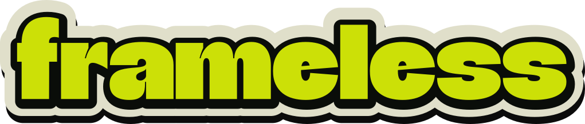

Frameless component · the hero object
wordmark
Real Que Grotesque Black outlines, die-cut in lime, ringed in black and cream, and standing off the page on a heavy offset shadow.
Use it when
- Identifying the product: the hero, the nav, the footer, an OG card.
- You have a dark bed under it. Lime needs one.
- You want the brand's loudest voice. Once per page.
Don't use it when
- The bed is light and you have not switched to
.wordmark--paper. - You were going to remove the shadow. It is the mark.
- You need a heading. This is a logo, not an
h1substitute.
The mark
Set live, in real text. It resizes fluidly, it is selectable, and it cannot drift from the type system because it is the type system.
Layer 4, on and off
Same lockup, same colours, same letterforms. The only difference is the drop-shadow() filter. The right-hand one is what this kit used to ship, and it is what the owner rejected on sight: "this image was so great because the depth, and the text shadow / sticker feel. That doesn't exist anywhere on these pages."
With the shadow — correct
Flat — the rejected version
A flat lockup. It is not a softer version of the mark; it is a different mark.
The outlined twin
Generated by ../assets/wordmark/build-wordmark.mjs straight out of the shipped WOFF2 — every path is a real Que Grotesque contour, not a redrawing. The shadow is drawn as a displaced copy of the band silhouette rather than as an SVG filter, so it survives rasterisers that do not run filters. This is what a favicon and an OG card use, where a webfont cannot be relied on.

Lockups — three, and no more
full — the introduction, once per document
compact — the default
mark — identifies, never introduces
On the light paper island
The lime stays, and that is not a violation of the lime law: the law governs lime as an ink, and this lockup’s boundary is a black keyline four times the weight of a hairline. The art itself puts exactly this mark on a bright sky. .wordmark--paper keeps the lime, turns the band white so it stays visible as cut paper against the cream, and lightens the shadow so it reads as depth rather than as a hole punched in the page.
The geometry is measured
Every number is generated into ../assets/wordmark/metrics.json from the real outlines in the WOFF2 — ink height 0.7275em for the string "frameless" — and both the live CSS and the outlined SVG read from it. Change the measurement and both change together.
| Layer | Ratio of ink height | Live CSS |
|---|---|---|
| Keyline | 9.0%, offset 1.2% across and 2.8% down | 0.131em text-stroke, translated |
| Band | 11.5% | 0.2983em text-stroke (centred, so doubled) |
| Cast shadow | 1.8% across, 8.5% down | drop-shadow(0.0131em 0.0618em 0 …) |
The band was 3.2% in the previous kit, measured off flat PNG exports. At that width it reads as a border rather than as cut paper, which is why the rebuild puts the band at 6–8% of width and the wordmark at the heavy end of it.
Recolouring
One property. --wordmark-keyline, --wordmark-band and --wordmark-shadow exist so the die-cut can be inverted for a special surface, and you should almost never touch them.
.wordmark { --wordmark-fill: var(--warning); }